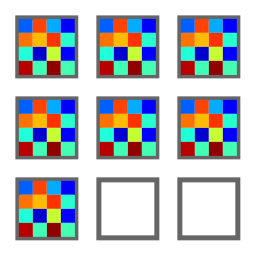
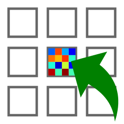

Opérations sur les images#
Cette section décrit les opérations qui peuvent être effectuées sur les images.
Voir aussi
Traitement des images pour plus d’informations sur les fonctionnalités de traitement d’image, ou Analyse sur les images pour des informations sur les fonctionnalités d’analyse des images.

Capture d’écran du menu « Opérations ».#
Lorsque le « Panneau Image » est sélectionné, les menus et barres d’outils sont mis à jour pour fournir les actions liées aux images.
Le menu « Opérations » permet d’effectuer diverses opérations sur l’image ou le groupe d’images courant. Il permet également d’extraire des profils, de distribuer des images sur une grille, ou de redimensionner des images.
Opérations arithmétiques de base#
Opération |
Description |
|---|---|
|
\(z_{M} = \sum_{k=0}^{M-1}{z_{k}}\) |
|
\(z_{M} = \dfrac{1}{M}\sum_{k=0}^{M-1}{z_{k}}\) |
|
\(z_{2} = z_{1} - z_{0}\) |
|
\(z_{2} = \dfrac{z_{1} - z_{0}}{\sqrt{2}}\) |
|
\(z_{M} = \prod_{k=0}^{M-1}{z_{k}}\) |
|
\(z_{2} = \dfrac{z_{1}}{z_{0}}\) |
|
\(z_{2} = \dfrac{1}{z_{1}}\) |
 Somme
Somme Moyenne
Moyenne Soustraction
Soustraction Soustraction quadratique
Soustraction quadratique Produit
Produit Division
Division Inverse
InverseOpérations avec une constante#
Crée une image à partir d’une opération avec une constante sur chaque image sélectionnée :
Opération |
Equation |
|---|---|
|
\(z_{k} = z_{k-1} + conv(c)\) |
|
\(z_{k} = z_{k-1} - conv(c)\) |
|
\(z_{k} = conv(z_{k-1} \times c)\) |
|
\(z_{k} = conv(\dfrac{z_{k-1}}{c})\) |
 Addition
Addition Soustraction
Soustraction Multiplication
Multiplication Division
Divisionoù \(c\) est la valeur constante et \(conv\) est la fonction de conversion qui gère la conversion du type de données (en conservant le même type de données que l’image d’entrée).
Parties réelles et imaginaires#
Opération |
Description |
|---|---|
|
\(z_{k} = |z_{k-1}|\) |
|
\(z_{k} = \Re(z_{k-1})\) |
|
\(z_{k} = \Im(z_{k-1})\) |
 Valeur absolue
Valeur absolue Partie réelle
Partie réelle Partie imaginaire
Partie imaginaireConversion du type de données#
L’action « Convertir le type de données »  permet de convertir le type de données des images sélectionnées. Pour les types de données entiers, la conversion est effectuée en rognant les valeurs à la plage de nouveaux types de données avant de convertir effectivement le type de données. Pour les types de données à virgule flottante, la conversion est directe.
permet de convertir le type de données des images sélectionnées. Pour les types de données entiers, la conversion est effectuée en rognant les valeurs à la plage de nouveaux types de données avant de convertir effectivement le type de données. Pour les types de données à virgule flottante, la conversion est directe.
Note
La conversion du type de données utilise la fonction cdl.algorithms.datatypes.clip_astype() qui repose sur la fonction numpy.ndarray.astype() avec les paramètres par défaut (casting=”unsafe”).
Fonctions mathématiques de base#
Fonction |
Description |
|---|---|
|
\(z_{k} = \exp(z_{k-1})\) |
|
\(z_{k} = \log_{10}(z_{k-1})\) |
Log10(z+n) |
\(z_{k} = \log_{10}(z_{k-1}+n)\) (avoid Log10(0) on image background) |
 Exponentielle
Exponentielle Logarithme (base 10)
Logarithme (base 10)Autres opérations#
Correction de champ plat#
Calcule la correction de champ plat à partir des deux images sélectionnées :
où \(z_{0}\) est l’image brute, \(z_{f}\) est l’image d’homogénéité, \(z_{threshold}\) est un seuil ajustable et \(\overline{z_{f}}\) est la valeur moyenne de l’image d’homogénéité :
Note
L’image brute et l’image d’homogénéité sont supposées avoir déjà été corrigées par soustraction d’image de noir.
Symétrie ou rotation#
Crée une nouvelle image en effectuant une symétrie axiale ou une rotation des données de l’image sélectionnée. L’image peut être transformée par symétrie axiale horizontale, verticale ou diagonale (transposition).
Profils d’intensité#
- Profil rectiligne
Extraire un profil horizontal ou vertical de chaque image sélectionnée et créer un nouveau signal à partir de chacun de ces profils.

Boîte de dialogue d’extraction de profil. Les paramètres peuvent être également définis manuellement (bouton « Editer les paramètres du profil »).#
- Profil le long d’un segment
Extraire un profil le long d’un segment de chaque image sélectionnée et créer un nouveau signal à partir de chacun de ces profils.
- Profil moyen
Extraire un profil horizontal ou vertical moyenné sur une zone rectangulaire de chaque image sélectionnée et créer un nouveau signal à partir de chacun de ces profils.

Boîte de dialogue d’extraction de profil moyen : la zone est définie par un rectangle. Les paramètres peuvent être également définis manuellement (bouton « Editer les paramètres du profil »).#
- Extraire un profil radial
Extraire un profil radial de chaque image sélectionnée et créer un nouveau signal à partir de ces profils.
Les paramètres suivants sont disponibles :
Paramètre
Description
Centre
Centre autour duquel le profil radial est calculé : centre de masse, centre de l’image, ou défini par l’utilisateur
X
Coordonnée X du centre (si défini par l’utilisateur), en pixels
Y
Coordonnée Y du centre (si défini par l’utilisateur), en pixels
Distribuer les images sur une grille#
Fonctionnalité |
Description |
|---|---|
 Distribuer sur une grille |
Distribuer les images sélectionnées sur une grille régulière |
 Réinitialiser les positions |
Réinitialiser les positions des images sélectionnées aux coordonnées de la première image (x0, y0) |